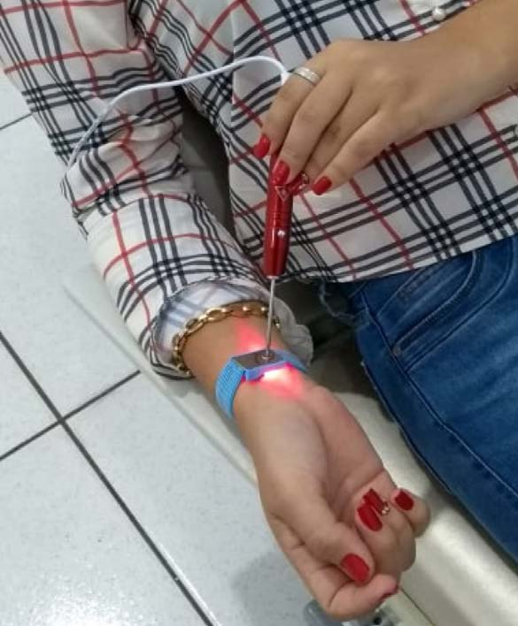
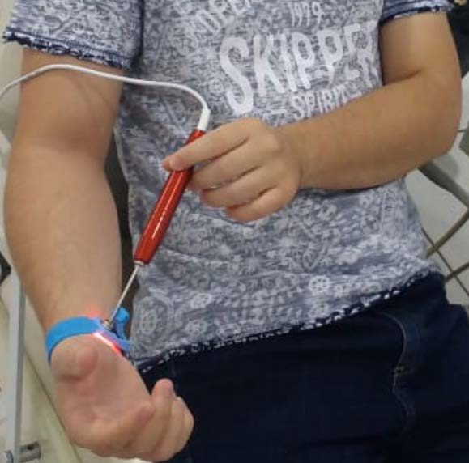

ILIB é um acrônimo do termo em inglês Intravascular Laser Irradiation of Blood que significa Irradiação Intravascular do Sangue com Laser. Esta técnica consiste na irradiação do sangue com Laser vermelho ou infravermelho para ativação celular, efeito antioxidante, ação anti-inflamatória e aumento da circulação sanguínea, que resulta na prevenção e tratamento de diversas doenças, por exemplo, artrite, artrose, inflamações e tensões musculares, bem como, do diabetes, colesterol, hipertensão, entre outras doenças cardiovasculares. Estes efeitos terapêuticos favorecem o rejuvenescimento, o bem-estar e a qualidade de vida.
A aplicação de luz na região do punho é atrativa, pois as espessuras da derme e epiderme são mais finas comparadas às outras regiões do corpo, facilitando o acesso da luz nos vasos sanguíneos, em especial na artéria radial (ILIB), bem como é um local em que se encontra a inervação responsável pela modulação cardiovascular através dos pontos de acupuntura, como o PC6 e PC7 (Laserpuntura).

Figura 80 – Pontos de irradiação ILIB (adaptado Ricardo Caldeira Cardoso et al. – 2018).
Protocolo Terapia ILIB
Aplicar o laser vermelho por 30 minutos na artéria radial pelo menos 1 vez por semana. Esta técnica pode ser aplicada de 1 a 3 vez por semana de acordo com o quadro clínico do paciente. O número de sessões pode ser diminuído conforme a evolução positiva do paciente, realizando-se o tratamento a cada 15 dias e depois 1 vez por mês até a finalização.

Figura 81 – Pontos de irradiação ILIB (adaptado Ricardo Caldeira Cardoso et al. – 2018).